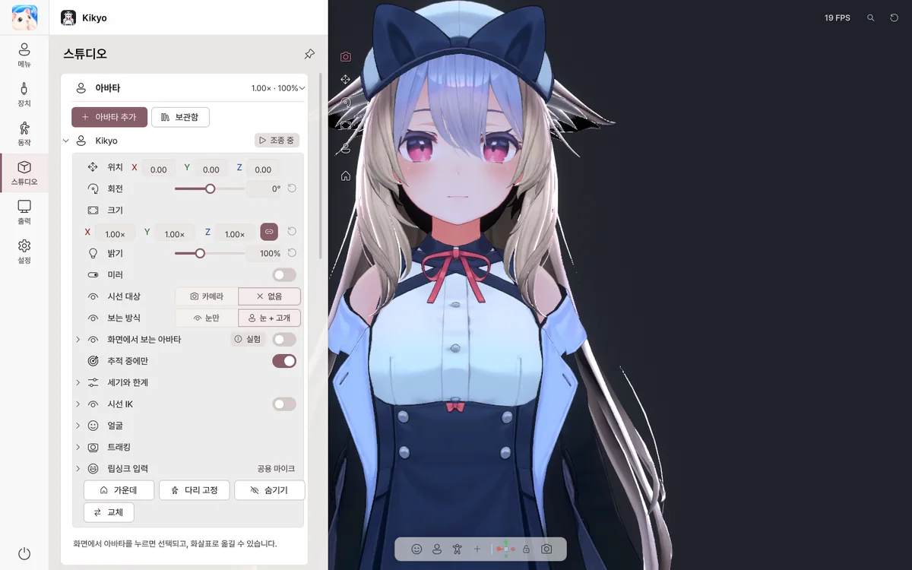
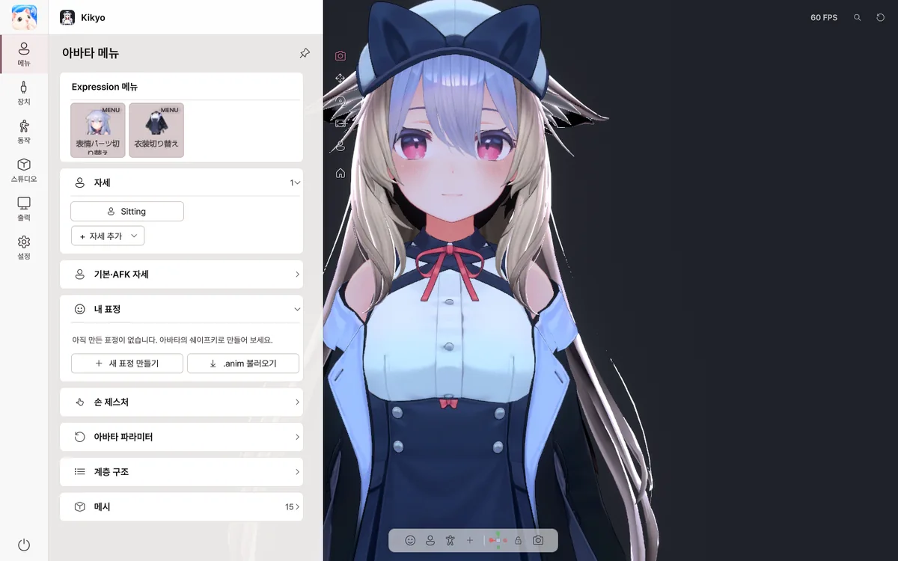
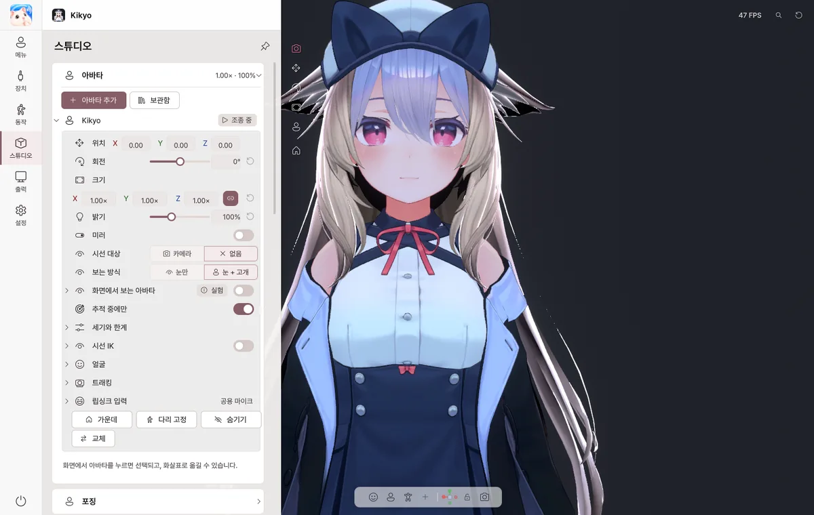
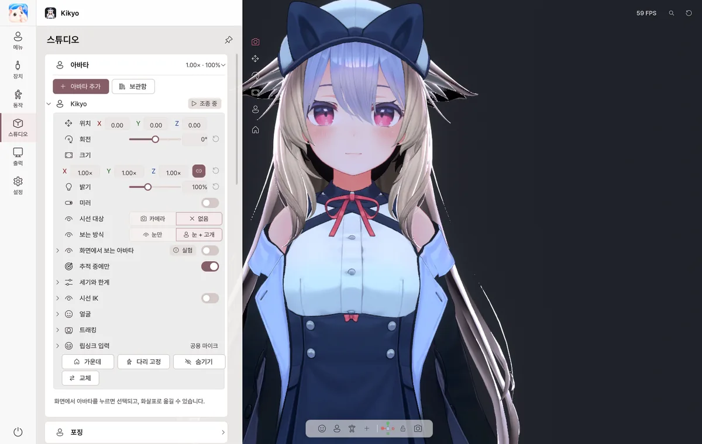
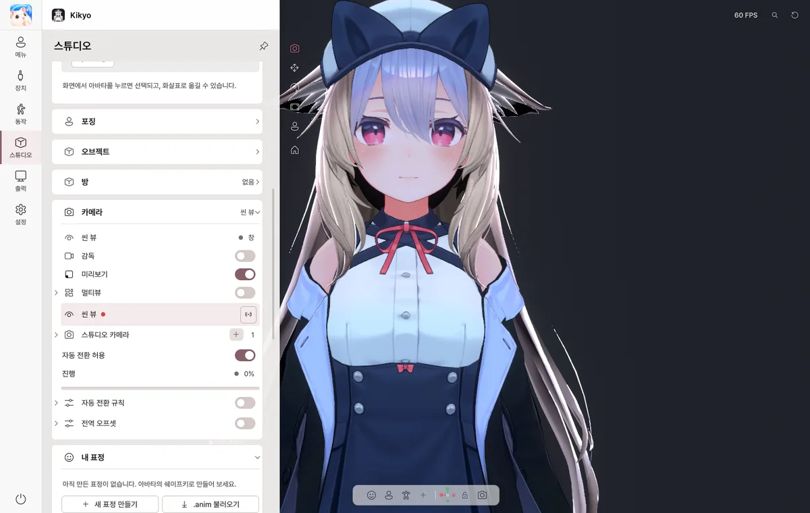
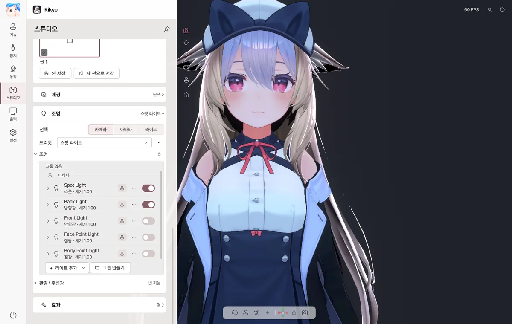

8. 스튜디오: 장면 · 카메라 · 조명 · 효과
v2.0.0부터 왼쪽 씬 메뉴의 이름은 스튜디오입니다. 여기서 바꾼 내용 중 스튜디오에 소속된 항목은 스튜디오를 저장할 때 함께 저장되고, 아바타에 소속된 항목은 해당 아바타를 다른 스튜디오로 옮겨도 따라옵니다. 실제 송출 중인 카메라와 작업용 씬 뷰는 서로 다를 수 있습니다.

스튜디오를 저장하고 불러오기
- 스튜디오 → 장면에서 새 장면을 만들거나 기존 장면을 고릅니다. 배경·방·조명·소품·아바타 배치·카메라를 조정합니다.
- 저장하면 현재 구성이 장면에 기록됩니다. 다른 장면으로 바꾸면 그 장면의 배경, 소품, 조명과 카메라 구성이 불러와집니다.
- 씬 목록 검색으로 이름을 찾고, 썸네일을 보고 원하는 장면을 선택합니다. 촬영 중 실수로 덮어쓰지 않도록 큰 수정 전에는 별도 장면으로 저장해 두세요.
- 아바타 소속으로 저장한 조명·오브젝트·설정은 아바타를 다른 장면으로 가져가도 유지됩니다. 스튜디오 소속은 그 장면에서만 나타납니다. 따라서 특정 의상에 붙일 장신구는 아바타 소속, 특정 무대의 조명은 스튜디오 소속으로 두는 편이 좋습니다.
- 장면에 저장한 카메라 화면은 OBS 등 외부 송출에도 적용됩니다. 현재 컴퓨터 창의 씬 뷰는 방송 화면이 아닐 수 있습니다. 장면을 편집하면서 시청자에게 나가는 카메라 화면을 따로 유지할 수 있습니다.
아바타 배치 · 멀티 아바타 (Pro)

- 아바타 추가 (Pro): 현재 스튜디오에 두 번째 이상 아바타를 둡니다. 아바타 카드를 선택하면 편집 대상이 바뀌므로 위치·회전·크기·설정 변경이 어느 아바타에 적용되는지 확인하세요.
- 조종 대상 전환 (Pro): 얼굴·손·몸 추적 입력을 어느 아바타가 받을지 바꿉니다. 이전 아바타는 설정한 대기 동작 또는 마지막 상태를 유지합니다.
- 같은 동작 (Pro): 동일한 추적 동작을 여러 아바타에 반영합니다. 신체 비율이 달라도 정규화된 관절 동작을 옮기므로 각 모델에서 정확히 같은 위치가 아니라 자연스러운 비슷한 움직임이 됩니다.
- 립싱크 대상: 모두는 여러 아바타의 입을 동시에 움직이고, 메인은 현재 주 조종 대상만 움직이고, 끔은 공유 립싱크를 적용하지 않습니다. 한 장면에 여러 인물을 두고 한 명만 말하도록 연출할 때 메인을 고릅니다.
- 아바타 위치·회전·크기: 이동은 장면의 자리, 회전은 바라보는 방향, 크기는 그 장면에서 보이는 신장과 장식물의 상대 크기에 영향을 줍니다. 크기를 높이면 조명·카메라의 고정된 거리에서 더 크게 보이므로 구도를 다시 확인하세요.
스튜디오 카메라 (Pro)

씬 뷰는 내 컴퓨터에서 마우스로 돌리고 확대하는 작업 화면입니다. 스튜디오 카메라는 시청자에게 내보낼 촬영 위치·방향·렌즈 값을 저장한 카메라입니다. 카메라 A를 송출해도 앱 창에서 아바타 뒤를 돌아보며 조명과 소품을 수정할 수 있습니다. 카메라 목록의 방송/송출 선택은 Spout2·NDI·화면 공유 등 주 출력 화면에 영향을 줍니다.
- 스튜디오 → 카메라에서 **+**로 촬영 카메라를 만듭니다. 새 카메라는 보통 현재 편집 중인 아바타를 대상으로 삼고 머리를 화면에 담는 추적·화면 구도 조합으로 시작합니다.
- 카메라를 선택하여 위치 방식, 회전/시선 방식, 렌즈·전환 값을 편집합니다. 목록 순서는 드래그로 바꿀 수 있습니다.
- 원하는 구도를 씬 뷰에서 맞춘 후 ⋯ → 현재 뷰로 맞추기를 이용하면 현재 작업 시점과 일치하도록 카메라 수치를 재설정합니다. 카메라 방식만 바꾸면 각 방식이 보존하던 별도 수치로 이동해서 화면이 갑자기 바뀔 수 있으므로 이 메뉴를 활용하세요.
- 방송할 카메라를 송출로 전환하고 출력 안내에서 외부 수신 화면을 확인합니다. 카메라 전환 중에도 컴퓨터의 씬 뷰는 유지됩니다.
카메라 위치 방식: 무엇을 따라 움직이나요?

| 선택 | 실제 움직임과 추천 용도 |
|---|---|
| 제자리 | X·Y·Z로 정해 둔 촬영 위치에 남습니다. 아바타가 걸어가도 카메라는 따라가지 않습니다. 고정 스튜디오 방송 화면에 좋습니다. |
| 대상 고정 | 지정한 대상 뼈·지점의 위치에 카메라가 바로 붙습니다. 머리를 대상으로 고르면 카메라가 머리 안에 들어갈 수도 있습니다. 눈높이 1인칭 등에 사용하고, 일반적인 얼굴 클로즈업이라면 거리 두고 따라가기가 안전합니다. |
| 거리 두고 따라가기 | 대상의 X(좌우)·Y(높이)·Z(앞뒤) 오프셋만큼 떨어져 함께 이동합니다. 아바타가 움직여도 일정 거리에서 찍는 추적 카메라에 좋습니다. |
| 대상 돌기 | 거리 두고 따라가기와 비슷하지만 링 각도로 대상 주위를 더 회전한 지점에서 촬영합니다. 0° 정면과 90° 측면처럼 빠르게 다른 샷을 잡습니다. |
**거리(X·Y·Z, 미터)**는 대상에서 카메라까지 떨어진 상대 위치입니다. X를 늘리면 좌우로, Y를 늘리면 높이로, Z의 절댓값을 늘리면 앞뒤 거리가 바뀝니다. Z 부호에 따라 대상 앞이나 뒤로 이동하므로 처음에는 작은 값씩 바꾸면서 화면을 확인하세요.
**부드러움(X·Y·Z)**은 목표 위치로 따라가는 지연입니다. 0은 즉시 반응해 빠르지만 작은 추적 떨림도 보일 수 있고, 값을 높이면 부드럽게 따라오는 대신 급격한 동작에서 잠깐 뒤처집니다. X만 크게 하면 좌우 이동만 느긋하게 따라오고, Y만 크게 하면 점프·앉기 같은 높이 변화만 부드럽습니다. 회전 부드러움의 **Yaw(좌우), Pitch(상하), Roll(기울기)**는 선택한 대상 회전 방식이 쓰는 축만 표시됩니다.
대상에 고정 / 대상 따라 회전: 차이를 실제로 이해하기
위치가 대상에 고정되는지와 대상의 회전을 카메라 위치 계산에 사용하는지는 서로 다른 설정입니다. 예를 들어 아바타 머리 오른쪽 1m, 뒤쪽 2m에 카메라를 배치했다고 가정합니다.
| 거리 두고 따라가기의 회전 기준 | 아바타가 왼쪽으로 90° 돌아설 때 |
|---|---|
| 세계 좌표 | X·Y·Z 거리가 월드 방향으로 고정됩니다. 아바타가 돌아도 카메라는 장면의 같은 측면에 있으므로 어느 순간 얼굴 대신 옆모습이 나옵니다. |
| 단순 추적 | 대상의 뒤를 유지하는 쉬운 추적 방식입니다. 대상이 돌아서면 대체로 뒤를 따라 이동하지만 좌우 오프셋을 따로 유지하지 않습니다. |
| 대상 따라 회전, 위는 세계 | **대상의 수평 회전(Yaw)**에 따라 카메라의 상대 자리도 함께 회전하되, 화면의 위쪽은 세계의 위쪽으로 둡니다. 아바타가 몸을 기울여도 카메라 지평선은 비교적 안정됩니다. |
| 회전, 롤 없음 | 대상이 위아래를 바라보거나 좌우로 돌 때 방향을 함께 따라가되, 고개를 옆으로 꺾는 롤은 따라가지 않습니다. |
| 대상에 고정 | 대상의 Yaw·Pitch·Roll 전체 회전을 상대 위치 계산에 사용합니다. 대상이 고개를 옆으로 눕히면 카메라 위치도 그 회전을 따라 원을 그릴 수 있어 동적인 시점을 만듭니다. |
즉 대상 고정 회전은 무조건 렌즈를 아바타 얼굴로 향하게 만드는 버튼이 아닙니다. 카메라를 놓는 좌표계가 대상의 회전에 따라 움직이는 규칙입니다. 얼굴을 계속 가운데 비추려면 아래 대상 응시 또는 화면 구도까지 설정해야 합니다.
카메라 시선/회전 방식: 렌즈가 어디를 바라보나요?
| 선택 | 실제 촬영 결과 |
|---|---|
| 제자리 | 지정한 회전각을 유지합니다. 아바타가 움직여도 카메라는 같은 방향을 봅니다. |
| 대상과 함께 | 대상이 바라보는 방향과 같은 방향으로 렌즈가 돌아갑니다. 대상 얼굴을 쳐다보는 것이 아니므로 움직이는 대상이 화면에서 벗어날 수 있습니다. |
| 대상 응시 | 카메라 위치는 별개로 유지하면서 렌즈만 지정한 지점을 계속 향합니다. 아바타가 움직여도 얼굴을 중앙 부근에 잡는 고정 추적 샷에 적합합니다. |
| 1인칭 | 지정한 **시작 각도(가로·세로)**를 바탕으로 시선을 정합니다. 머리/눈높이 대상 고정과 조합하면 인물의 시점 같은 구도가 됩니다. |
| 화면 구도 | 대상을 화면의 지정한 위치(가로·세로 0–1)에 놓도록 렌즈를 움직입니다. 0.5, 0.5면 가운데, 가로 0.33면 왼쪽 1/3 근처, 세로 0.35면 상단 쪽에 배치해 인터뷰 구도를 잡습니다. |
- 대상 선택은 캐릭터 전체 또는 얼굴·머리·기타 뼈의 지점을 고르는 설정입니다. 머리로 설정하면 숙이는 동작까지 반영됩니다. 특정 아바타를 다른 아바타로 교체하면 새 모델의 대상 위치에 따라 구도가 조금 달라질 수 있습니다.
- **조준점 X·Y·Z(미터)**는 선택한 대상의 어느 부분을 겨눌지 옮깁니다. 예를 들어 머리 뼈를 대상으로 한 상태에서 Y를 소폭 내리면 얼굴 아래쪽·입 근처로 중심이 이동합니다.
- 시선 부드러움은 바라볼 목표가 움직일 때 카메라 회전이 따라가는 속도를 조절합니다. 0은 즉시, 값이 높을수록 회전이 늦어지면서 떨림이 줄고 동작의 시작·종료가 부드러워집니다.
- 화면 위치 0–1은 아바타의 실제 좌표를 바꾸지 않고 구도만 변경합니다. X는 왼쪽→오른쪽, Y는 위→아래로 증가하는 화면 비율을 기준으로 생각하세요.
렌즈·흔들림·카메라 전환

| 항목 | 낮추면 / 높이면 |
|---|---|
| 시야각(FOV, 1–179°) | 작을수록 피사체가 크게 보이는 망원 느낌, 클수록 넓은 배경까지 담는 광각입니다. 광각에서 화면 가장자리 왜곡이 커질 수 있습니다. |
| 직교 카메라 크기 | 원근 없이 캐릭터 크기를 고정해 보여줍니다. 값을 키우면 더 넓게 담아 캐릭터가 작아지고, 줄이면 크게 보입니다. |
| 앞/뒤 클리핑 거리 | 카메라에서 너무 가까운 것(앞)과 너무 먼 것(뒤)을 그리지 않을 경계입니다. 앞 값을 지나치게 높이면 얼굴 가까이 놓인 소품이 잘리고, 뒤 값을 지나치게 낮추면 배경이 사라집니다. |
| 화면 비율 | 16:9는 일반 가로 방송, 9:16은 세로 영상 등에 맞춥니다. 비율이 바뀌면 같은 FOV에서도 좌우에 담기는 폭이 달라지므로 카메라 구도를 다시 확인합니다. |
| 손 카메라 흔들림 강도(0–1) | 0에 가까우면 안정된 삼각대, 높을수록 손으로 들고 찍는 듯한 이동이 큽니다. 멀미가 나면 강도를 줄이거나 끄세요. |
| 흔들림 속도(0–2) | 낮으면 천천히 흔들리고, 높으면 짧은 간격으로 떨립니다. 속도만 키워도 크게 흔들리는 것은 아니며 강도와 함께 조절합니다. |
| 컷 / 크로스페이드 | 컷은 즉시 전환, 크로스페이드는 두 카메라 화면이 설정된 시간 동안 겹쳐 바뀝니다. 전환 길이를 늘리면 느긋한 장면 전환, 줄이면 빠른 템포가 됩니다. 카메라 전환 시간은 0–5초 범위입니다. |
감독·애니메이션·멀티뷰
- 감독 모드는 카메라들을 시청자 화면으로 전환할 때 사용합니다. 멀티뷰는 여러 카메라의 미리보기를 격자로 모아 내 작업 화면에 보여주는 기능입니다. 감독 모드를 켰다는 이유만으로 멀티뷰가 자동으로 나타나지 않으며 별도 스위치로 켭니다.
- **멀티뷰 격자(2–4)**가 커질수록 한 화면에 보는 카메라 칸 수가 늘고 각 칸은 작아집니다. **다운샘플링(1–8)**을 올리면 미리보기 해상도 부담을 줄일 수 있지만 각 칸 화질이 떨어집니다. 갱신률을 낮추면 CPU/GPU 부담이 줄고 미리보기 움직임은 덜 매끄럽습니다. 시청자에게 나가는 메인 카메라 화질과 다르게 느껴질 수 있습니다.
- 카메라별 애니메이션의 기간(1–15초)은 한 동작에 걸리는 시간이고, 반복은 재생 횟수/왕복 여부입니다. 방송 전환 시 다시 시작을 켜면 그 카메라를 다시 송출할 때 움직임도 처음부터 시작합니다. 카메라 애니메이션 종료 후 지정한 다른 카메라로 넘기도록 설정할 수도 있습니다.
- 자동 전환 규칙은 카메라에 붙인 태그와 가중치에 따라 후보를 정합니다. 가중치 0은 선택되지 않으며 다른 후보보다 큰 가중치는 선택될 가능성을 높입니다. 자동 전환을 켜 둔 경우 카메라 자체의 종료 후 전환 옵션이 숨겨질 수 있습니다.
- 카메라별 Spout2 출력 (Pro): 주 방송에 사용 중이지 않은 카메라도 별도 이름으로 OBS에 받을 수 있습니다. 독립 출력은 최대 3대이며 별도 출력을 켜면 렌더 부하가 늘어납니다. Spout2 설치 안내를 먼저 진행하세요.
방 · 오브젝트 · 소품 (Pro 포함)

- 방 배치: 제공된 방 프리셋에서 선택하고, 위치(X/Y/Z)·회전·크기를 바꾸면 배경 공간과 캐릭터가 서 있는 무대가 바뀝니다. 스튜디오별로 저장됩니다.
- 오브젝트 위치(X/Y/Z): 옆/위/앞으로 옮깁니다. **회전(X/Y/Z)**은 물체가 어느 방향을 향하는지, **크기(X/Y/Z)**는 각 축의 길이를 바꿉니다. 비례 연결을 끄면 세로만 늘이거나 가로만 넓힐 수 있지만 형태가 찌그러질 수 있습니다.
- 월드에 고정하면 캐릭터가 움직여도 제자리에 남습니다. 아바타에 붙이기는 아바타가 이동·회전할 때 함께 따라옵니다. 뼈에 붙이기는 손·머리 같은 지정 뼈에 부착되어 제스처나 포즈에도 따라 움직입니다.
- 뼈 기준 오프셋은 물체를 붙인 지점에서 얼마만큼 떨어뜨리는지 결정합니다. 손 소품이 손바닥을 뚫으면 위치를 소폭 조절하고, 소품 방향이 반대로 보이면 회전 오프셋을 조절하세요.
- 소유권을 아바타로 두면 해당 아바타의 다른 씬에도 소품이 따라가고, 스튜디오로 두면 해당 장면에만 남습니다.
배경
- 단색은 색 편집에서 색조·채도·밝기를 직접 조절합니다. 초록/파랑은 OBS의 크로마키 필터용입니다. 의상에 같은 색이 있으면 그 부분도 지워질 수 있으므로 의상과 다른 색을 선택하세요.
- 투명은 Spout2와 NDI의 알파를 사용할 때 권장합니다. 앱 작업 창에서는 검게 보이더라도 수신 프로그램에서 알파 합성이 지원되면 배경 없이 아바타만 놓을 수 있습니다. 가상 카메라·일반 디스플레이 공유는 투명 알파를 동일하게 전송하지 않습니다.
- 이미지의 확대·축소는 화면에 차지하는 비율을, X/Y 오프셋은 이미지의 표시 위치를 바꿉니다. 채우기/잘라내기는 원본 비율을 유지하며 가장자리를 잘라 화면을 채우고, 끄면 화면에 맞춰 늘어날 수 있습니다. 영상 방송 비율을 바꾼 뒤 배경 가장자리도 다시 확인하세요.
조명
- 밝기/세기를 높이면 비추는 부분이 밝아집니다. 너무 높으면 피부·머리카락의 밝은 부분이 하얗게 날아갈 수 있습니다. 색상을 바꾸면 조명의 색, **색온도(약 1,500–12,000K)**를 낮추면 따뜻한 주황빛·높이면 푸른빛에 가까운 조명으로 조정합니다.
- 방향광은 햇빛처럼 장면 전반을 일정 방향으로 비춥니다. 점광은 주위 사방으로, 스폿은 원뿔 모양으로 비춥니다. 범위를 올리면 먼 곳까지 조명이 닿지만 장면 전체가 밝아질 수 있습니다. 스폿 각도가 좁으면 얼굴 한 부분을 강조하고 넓으면 더 넓은 몸과 배경을 비춥니다.
- 위치 따라가기를 켜면 선택한 아바타·카메라·뼈가 움직일 때 조명도 따라옵니다. 대상 바라보기는 조명의 방향을 대상 쪽으로 돌립니다. 둘은 다른 설정이라, 위치 고정 + 대상 바라보기는 움직이는 인물을 비추는 무대 고정 조명이고 위치 따라가기 + 대상 바라보기는 인물을 따라가는 이동 조명입니다.
- 조명 위치·회전 부드러움을 높이면 따라가는 반응이 지연되면서 덜 흔들립니다. 얼굴 추적 움직임을 따라가는 라이트가 울렁인다면 먼저 스무딩을 조금 올려 보세요.
- 그림자 강도가 높으면 그늘이 짙어지고, 부드러움이 높으면 그림자 경계가 흐려집니다. 얼굴에 진한 그늘이 생기면 그림자 강도를 낮추거나 보조광을 추가하세요.
- 환경광 세기는 조명을 받지 않는 부분도 전체적으로 밝게 하며, 반사는 머티리얼의 광택·주변 반사에 영향을 줍니다. 프리셋을 바꾸면 개별 라이트뿐 아니라 환경광·후처리 효과도 바뀔 수 있습니다.
- **볼류메트릭 스폿 라이트 (Pro)**는 공기 중에 빛기둥이 보이는 효과입니다. 범위·각도·밀도를 높이면 빛의 줄기가 넓거나 진해지지만, 다른 반투명 효과와 겹치거나 성능에 영향을 줄 수 있어 한 개씩 켜서 확인하세요.
효과 (포스트 프로세싱)
일반 포스트 프로세싱은 Basic과 Pro 모두 지원합니다. Beautify 및 HBAO 등 별도 후처리 효과는 Pro 전용입니다. 이 기능들은 스튜디오 화면뿐 아니라 실제 방송 카메라로 출력되는 그림에도 영향을 주므로 조절 후 OBS에서 최종 결과를 확인하세요.
| 조절 | 값을 바꿨을 때 보이는 차이 |
|---|---|
| 안티에일리어싱 | 계단진 윤곽을 부드럽게 합니다. FXAA는 비교적 가볍지만 세부가 조금 흐릴 수 있고, SMAA는 윤곽을 살리는 편이며 TAA는 움직임에 따라 잔상이 보일 수 있습니다. |
| 블룸 세기 | 발광/밝은 부분 주변의 빛 번짐을 진하게 만듭니다. 임계값을 높이면 아주 밝은 부분만 번지고, 낮추면 평범한 밝은 면도 번져 화면이 뿌예질 수 있습니다. 확산을 높이면 번짐의 범위가 넓어집니다. |
| 노출 · 대비 · 채도 | 노출은 전체 밝기, 대비는 밝은 곳과 어두운 곳의 차이, 채도는 색의 선명함을 바꿉니다. 채도를 많이 낮추면 흑백에 가까워집니다. |
| 색온도 · 틴트 | 색온도는 차갑거나 따뜻한 색 기운, 틴트는 녹색/자홍색 쪽 균형을 조정합니다. 피부색이 이상하면 조명 색보다 이 설정도 확인하세요. |
| 비네팅 | 화면 가장자리를 어둡게 만들어 가운데로 시선을 모읍니다. 세기는 어두워지는 정도, 부드러움은 경계 퍼짐, 둥근 정도는 모양을 바꿉니다. |
| 필름 그레인 | 화면에 작은 입자를 섞습니다. 강도를 높이면 필름 질감이 강해지지만 압축 영상의 노이즈도 눈에 띌 수 있습니다. |
| 색수차 | 윤곽 가장자리에 RGB 색이 살짝 갈라지는 효과입니다. 높이면 일부러 렌즈 결함처럼 보입니다. |
| 피사계 심도 | 초점에 있는 얼굴은 선명하게, 그 앞뒤를 흐리게 합니다. 얼굴 자동 초점을 켜면 아바타를 따라 초점이 바뀌고, 끄면 초점 거리를 직접 맞춥니다. 조리개 f 숫자를 낮출수록 흐림이 강해집니다. |
| 모션 블러 | 빠른 움직임의 잔상을 만듭니다. 셔터 각도를 키우면 더 길게 번지고, 샘플 수를 키우면 부드럽지만 GPU 사용량이 늘 수 있습니다. |
| HBAO (Pro) | 물체가 맞닿거나 접히는 곳에 주변 그림자를 더합니다. 강도/반경을 높이면 주름·경계가 선명해지지만 너무 높으면 얼굴의 눈·코 주변이 더럽게 보일 수 있습니다. |
| Beautify (Pro) | 카메라 화면의 전반적인 광학·피부·색감을 보정합니다. 다른 블룸/색보정과 겹치면 효과가 지나칠 수 있으니 기존 효과를 낮추고 한 항목씩 비교하세요. |
잘못 조절한 경우 해당 효과 묶음의 초기화 또는 되돌리기를 사용하세요. 투명 배경을 사용하는 경우 비네팅·피사계 심도·화면 프레임 효과가 알파 가장자리까지 바꾸는지 OBS 실제 합성 화면에서 확인하는 것이 좋습니다.